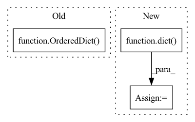

Pattern ID :267
Before Change
def extract_reid_feature(data_loader, model, device, normalize):
model.eval()
features = OrderedDict()
labels = OrderedDict()
with torch.no_grad():
for i, (images, filenames, ids, _) in enumerate(data_loader):After Change
// switch to eval mode
model.eval()
feature_dict = dict()
with torch.no_grad():
end = time.time()
for i, (images_batch, filenames_batch, _, _) in enumerate(data_loader):In pattern: SUPERPATTERN
Frequency: 4
Non-data size: 3
Instances Fragment ID: 2091471
Project Name: thuml/transfer-learning-library
Commit Name: f3f63a2322330a2a298fcba86b21ecb04f3667d5
Time: 2021-07-29
Author: chenbx18@mails.tsinghua.edu.cn
File Name: common/utils/metric/reid.py
M Class Name: AnonimousClass
N Class Name: AnonimousClass
M Method Name: extract_reid_feature(5)
N Method Name: extract_reid_feature(4)
M Parent Class:
N Parent Class:
M File Name: common/utils/metric/reid.py
N File Name: common/utils/metric/reid.py
M Start Line: 198
M End Line: 213
N Start Line: 170
N End Line: 200
Before Change
stages.update(kwargs)
self.stages = [stages]
self.hooks = OrderedDict()
if hooks is not None:
self.register_hook(hooks)
time_str = nncore.get_timestamp()After Change
if isinstance(data_loader, DataLoader) or isinstance(
data_loader, str) or "type" in data_loader:
data_loader = dict(train=data_loader)
if "val" not in data_loader:
data_loader["val"] = data_loader.get("test", data_loader["train"])
Fragment ID: 2091476
Project Name: yeliudev/nncore
Commit Name: 591ba982d2f81385c91f619f48fc1fa6068f0d9a
Time: 2021-11-05
Author: yeliudev@outlook.com
File Name: nncore/engine/engine.py
M Class Name: Engine
N Class Name: Engine
M Method Name: __init__(9)
N Method Name: __init__(8)
M Parent Class: object
N Parent Class: object
M File Name: nncore/engine/engine.py
N File Name: nncore/engine/engine.py
M Start Line: 146
M End Line: 161
N Start Line: 147
N End Line: 171
Before Change
self.paths = nn.ModuleList()
for k, d in zip(kernel_size, dilation):
p = _get_padding(k, stride, d)
self.paths.append(nn.Sequential(OrderedDict( [
("conv", nn.Conv2d(
in_channels, out_channels, kernel_size=k, stride=stride, padding=p,
dilation=d, groups=groups, bias=False)),
("bn", norm_layer(out_channels)),
("act", act_layer(inplace=True))
]) ))
attn_channels = max(int(out_channels / attn_reduction), min_attn_channels)
self.attn = SelectiveKernelAttn(out_channels, num_paths, attn_channels)After Change
out_channels = out_channels // num_paths
groups = min(out_channels, groups)
conv_kwargs = dict(
stride=stride, groups=groups, drop_block=drop_block, act_layer=act_layer, norm_layer=norm_layer)
self.paths = nn.ModuleList([
ConvBnAct(in_channels, out_channels, kernel_size=k, dilation=d, **conv_kwargs)
for k, d in zip(kernel_size, dilation)])
Fragment ID: 2091473
Project Name: alvinwan/nbdt-pytorch-image-models
Commit Name: 9f11b4e8a25495874d84a56d4ca11af191a01324
Time: 2020-02-01
Author: rwightman@gmail.com
File Name: timm/models/conv2d_layers.py
M Class Name: SelectiveKernelConv
N Class Name: SelectiveKernelConv
M Method Name: __init__(14)
N Method Name: __init__(13)
M Parent Class: nn.Module
N Parent Class: nn.Module
M File Name: timm/models/conv2d_layers.py
N File Name: timm/models/conv2d_layers.py
M Start Line: 280
M End Line: 311
N Start Line: 303
N End Line: 333